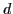
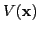
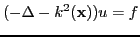
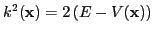

Predicting the outcome of collisions between small atomic and molecular systems is of fundamental importance for many areas of science. Understanding their dynamics is crucial for example for plasma physics, combustion and electron driven chemistry, amongst other examples. However, it is computationally very challenging to predict from first principles the outcome of these collisions since it requires the solution of high-dimensional Schrödinger equation. These are known to be hard to solve even with the best current iterative methods. To calculate, for example, the breakup reaction rates of the hydrogen molecule requires the solution of a 7-dimensional scattering problem. The reaction rates, also known as the cross sections, are the far field amplitudes of solution. The development of efficient solvers for this problem remains important challenge. In this talk we discuss the development of solvers for these scattering based on multigrid.
The Schrödinger equation in

-dimensions is
is the potential,
Scattering problems are described by solutions of ( ) with
a positive energy
) with
a positive energy  and for these energies the equation is
equivalent to a Helmholtz equation
and for these energies the equation is
equivalent to a Helmholtz equation
 |
(2) |

solved with absorbing boundary conditions.In this talk we discusses the current practices in solving the Schrodinger equation [1,2] and relate them to the challenges of solving the Helmholtz equation. We also illustrate how advances such as Complex Shifted Laplacian [3] and complex countour multigrid [4] are applied to solve the Schrödinger equation.